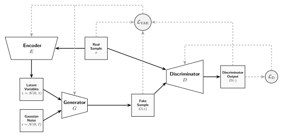

Generative Adversarial Networks
Generative Adversarial Networks (GANs) [9] are popular generative models built on a distinct concept: they pit two primary components, a generator and a discriminator, against each other in a zero-sum game. The discriminator's job is to distinguish synthetic data from real data, while the generator focuses on producing synthetic data that the discriminator fails to differentiate from the real data.
In this module, the implementation uses Wasserstein distance to train the discriminator [10]. Alongside this, an encoder trains simultaneously to map real data points back into the latent space. This encoder uses a cost function identical to the Evidence Lower Bound (ELBO) found in Variational Autoencoders (VAEs) [11], making this implementation a hybrid WGAN-VAE.
Once training is complete, the generator operates as a standalone model. It takes stochastic latent variables from a simple distribution and transforms them into synthetic data points within the target data space.

Vanilla GAN Loss Function
In the original formulation of GAN, there are only two main components: a generator $G$ which takes as an input some latent variable whose distribution can be easily sampled from and outputs a synthetic random variable that ideally one could not distinguish from real data, and a discriminator $D$ that takes some input vector of the same dimensions as our training data and retuns a probability of said random sample being either real or fake.
Such kind of model can be trained with the optimization problem
\[ \begin{matrix} \text{argmin} \\ \theta \end{matrix} \ \begin{matrix} \text{max} \\ \phi \end{matrix} \left( \mathbb{E}_{x \sim \mu_\text{real} } \left[ \log \left( D_\phi (x) \right) \right] + \mathbb{E}_{z \sim \mu_\text{latent}} \left[ \log \left( 1 - D_\phi \left( G_\theta (z) \right) \right) \right] \right),\]
where $\mu_\text{real}$ and $\mu_\text{latent}$ are the real data and latent variable distributions respectively, and $\theta$ and $\phi$ are the neural network parameters of the generator and discriminator respectively.
Wasserstein GAN Loss Function
A well-known issue with the vanilla formulation of GANs is their succeptibility of mode collapse, in which the generator only learns to synthetize data in a smaller portion of the real data distribution instead of covering the whole space.
A popular variant of GANs that mitigate this issue are Wasserstein GANs (WGANs), where the optimization problem becomes
\[ \begin{matrix} \text{argmin} \\ \theta \end{matrix} \ \begin{matrix} \text{max} \\ \phi \end{matrix} \left( \mathbb{E}_{x \sim \mu_\text{real} } \left[ D_\phi (x) \right] - \mathbb{E}_{z \sim \mu_\text{latent}} \left[ D_\phi \left( G_\theta (z) \right) \right] \right),\]
where $D$ is assumed to be a measurable function with bounded Lipschitz norm, which is needed to prevent the inner maximization problem from exploding to either plus or minuns infinity depending if the difference of the expectation values is positive or negative respectively. Multiple different strategies have been suggested to impose a finite Lipschitz norm in $D$. However, in this module we focus on what arguably are the two most popular solutions to this problem.
Weight Clipping
Compared to grandient penalty, this approach is fairly simple. To prevent large gradients the weight matrices of the discriminator neural network are prevented from being outside a domain $[-c, c]$, where $c$ is arbitrarily chosen by the user with valus small enough to prevent mode collapse, but also large enough to as to not inhibit the discriminator from learning.
Gradient Penalty
As the name of this approach suggests, this approach aims to bound the Lipschitz norm of $D$ by adding a penalty term to the cost function for when the gradient norms exceed some some chosen value $a$, often $a = 1$ [12]. In other words, the optimization problem becomes:
\[ \begin{matrix} \text{argmin} \\ \theta \end{matrix} \ \begin{matrix} \text{max} \\ \phi \end{matrix} \left( \mathcal{L}_\text{W} \left( \phi, \theta \right) - \mathcal{L}_\text{GP} \left( \phi, \theta \right) \right),\]
where
\[\begin{gather*} \mathcal{L}_\text{W} \left( \phi, \theta \right) := \mathbb{E}_{x \sim \mu_\text{real} } \left[ D_\phi (x) \right] - \mathbb{E}_{z \sim \mu_\text{latent}} \left[ D_\phi \left( G_\theta (z) \right) \right] \\[0.3cm] \mathcal{L}_\text{GP} \left( \phi, \theta \right) := \lambda \ \mathbb{E}_{\hat{x} \sim \hat{\mu}} \left[ \left( \left \lVert \nabla D_\phi (\hat{x}) \right \rVert - a \right)^2 \right], \end{gather*}\]
in which $\lambda$ and $a$ are used-defined constants, with default values 10 and 1 respectively, and
\[ \hat{\mu} \equiv \left \lbrace \left. \epsilon x + \left( 1 - \epsilon \right) \tilde{x} \ \right| x \sim \mu_\text{real} \text{ and } \tilde{x} \sim \mu_\text{gen} \text{ and } \epsilon \sim U \left[ 0, 1 \right] \right \rbrace \\[0.3cm] \mu_\text{gen} \equiv \left \lbrace \left. G_\theta (z) \ \right| z \sim \mu_\text{latent} \right \rbrace.\]
Wasserstein GAN-VAE Loss Function
While WGANs provide improved means to prevent mode collapse during training, this architecutral configuration does not feature an explicit penalty if the latent space distribution differs from a smooth and easy to sample distribution of our choosing, often being a multidimensional isotropic Normal distribution with zero mean and identity variance.
The ELBO of VAEs feature such contribution in the form of a KL divergence term, thus we replace our generator from a simple neural network with a VAE, thus we replace our generator from a simple neural network with a VAE, allowing us to not only decode latent variables into synthetic data, but also to encode real data samples back into the latent space. Therefore, we rewrite the Wasserstein loss component as
\[ \mathcal{L}_\text{W} \left( \phi, \varphi, \theta \right) := \mathbb{E}_{x \sim \mu_\text{real} } \left[ D_\phi (x) \right] - \frac{1}{2} \left( \mathbb{E}_{\tilde{x} \sim \mu_\text{gen}} \left[ D_\phi \left( \tilde{x} \right) \right] + \mathbb{E}_{\tilde{x} \sim \mu_\text{recon}} \left[ D_\phi \left( \tilde{x} \right) \right] \right)\]
where $\varphi$ are the parameters of the encoder network and
\[ \mu_\text{recon} \equiv \left \lbrace \left. G_\theta \left( E_\varphi \left( x \right) \right) \ \right| x \sim \mu_\text{real} \right \rbrace .\]
Finally, we replace our previous min-max problem with a more tractable sequential game in which the discriminator takes the first turn, in which it maximizes for $N_\text{critic}$ epochs a discriminator loss function $\mathcal{L}_D$. After each turn of $D$ is concluded, then, $G$ and $E$ (the VAE components) take a simultaneous turn where they minimize for exactly just one epoch a loss function $\mathcal{L}_\text{VAE}$. This sequence of turns is then repeated for enough epochs until the VAE learns to produce accurate synthetic data, which should, in principle, be a Nash equilibrium.
Discriminator Loss
Since the discriminator architecture remains unchanged between a vanilla WGAN and a WGAN-VAE, the loss function used for the generator remains identical to the loss function used in a WGAN. In other words:
\[ \mathcal{L}_\text{D} \left( \phi, \varphi, \theta \right) := \mathcal{L}_\text{W} \left( \phi, \varphi, \theta \right) - \mathcal{L}_\text{GP} \left( \phi, \varphi, \theta \right) .\]
Variational Autoencoder Loss
The sole difference between a vanilla WGAN and a WGAN-VAE, or at least the one implemented in this module, is the addition of a loss component identical to the ELBO often used to train VAEs. Strictly speaking:
\[ \mathcal{L}_\text{VAE} \left( \phi, \varphi, \theta \right) := \gamma_\text{VAE} \left( \mathcal{L}_\text{KL} \left( \varphi \right) - \mathcal{L}_\text{recon} \left( \varphi, \theta \right) \right) + \gamma_\text{WGAN} \ \mathcal{L}_\text{W} \left( \phi, \varphi, \theta \right)\]
where $\gamma_\text{VAE}$ and $\gamma_\text{WGAN}$ are user-adjustable constants and
\[ \mathcal{L}_\text{KL} \left( \varphi \right) := \beta \ D_\text{KL} \left( q_\varphi (z | x) \ \rVert \ p(z) \right) = \beta \ \mathbb{E}_{q_\varphi (z | x)} \left[ \log \left( \frac{q_\varphi (z | x)}{p(z)} \right) \right] \\[0.3cm] \mathcal{L}_\text{recon} \left( \phi, \varphi \right) := \mathbb{E}_{q_\varphi (z | x)} \left[ \log \left( p_\theta (x | z) \right) \right] ,\]
in which $\beta$ is also a user-adjustable constant to avoid KL vanishing.